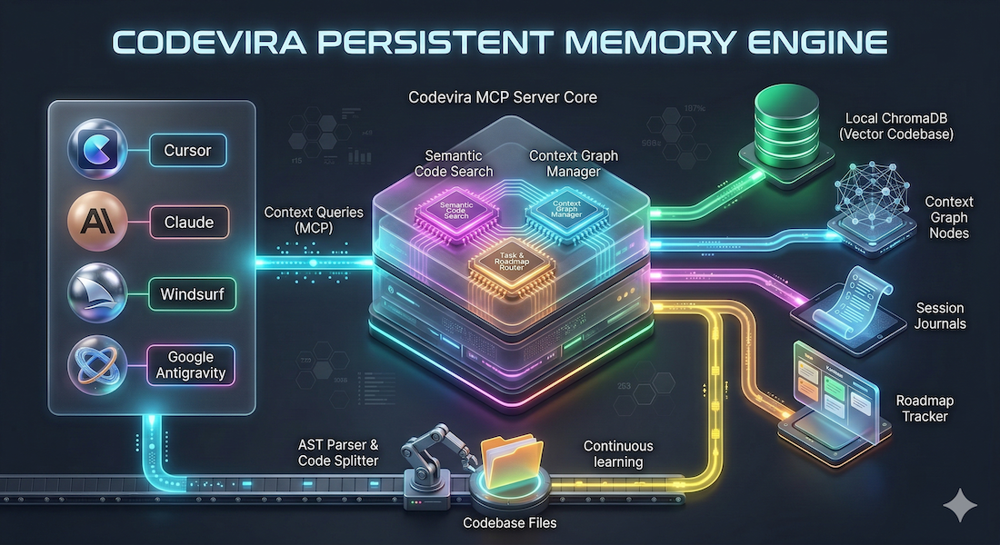

Eliminate the Orientation Tax. Rebuild your agent's context in milliseconds, not minutes.
26 Standardized MCP Tools for Global Context Awareness.
get_node
Retrieves metadata, rules, and connectivity for a specific file node.
get_impact
Calculates the blast radius of a change using BFS traversal.
list_nodes
Lists all nodes filtered by layer, stability, or protection status.
add_node
Registers a new file into the context graph with automated role inference.
refresh_graph
Auto-scans and registers all new files in the workspace.
update_node
Commits session changes (rules, stability) back to the graph.
get_roadmap
Snapshot of current phase, next actions, and open changesets.
get_full_roadmap
Complete project history including all completed and deferred phases.
get_phase
Detailed breakdown of a specific roadmap milestone.
add_phase
Inserts new work items into the prioritized execution queue.
update_phase_status
Manages phase transitions: pending | in_progress | blocked.
defer_phase
Moves low-priority items to the deferred backlog.
complete_phase
Finalizes a milestone and records permanent key decisions.
update_next_action
Directs the next agent session with precise instructions.
start_changeset
Initiates tracking for a multi-file atomic modification.
update_changeset_progress
Tracks granular file-level completion within a changeset.
complete_changeset
Finalizes a fix and persists decisions for cross-session memory.
list_open_changesets
Identifies unfinished work from previous sessions.
search_codebase
Semantic vector search via local ChromaDB and transformers.
refresh_index
Triggers incremental re-indexing of changed files.
search_decisions
Queries institutional memory across all historical logs.
get_history
Correlates file states with recent git commit history.
write_session_log
Appends structured outcomes to the persistent decision journal.
get_playbook
Retrieves architectural 'plays' for specific tasks (e.g. add_route).
get_signature
Extracts class/function signatures without reading full sources.
get_code
Reads specific symbols from disk with 100% currency.
